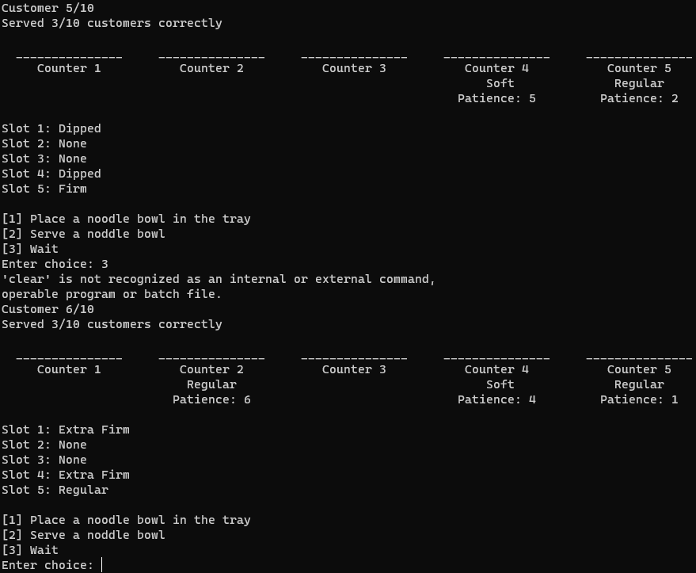

featured image
autobiography
Kurt was born in Quezon City to Rodel and Ethel Calixtro. Throughout his childhood, he displayed a specific fascination and interest in computers, from learning the basic workings of Microsoft Word at his elementary school called Grace Hope Learning School to playing hours and hours of Plants vs. Zombies at home. He displays an unrelenting curiosity regarding the inner workings of computer programs which carried throughout his high-school education at Philippine Science High School, and even to college at the University of the Philippines - Los Baños. He has a knack for tinkering and playing around, conducting small coding experiments to answer every little "What if?" question that pops in his mind. Currently, he is pursuing work in the Computer Science industry, armed both with the mind of a scientist and the heart of an artist.
skills
- Python
- C
- Java
- R Script
- HTML
- CSS
- JavaScript
previous projects
- Noodle Shop Game (Python)
- Generic Quadratic Spline Interpolation Solver (R Script)
- Generic Polynomial Regression Solver (R Script)
- Simplex-Based Diet Problem Solver (R Script)
- Window Golf Game (Java)